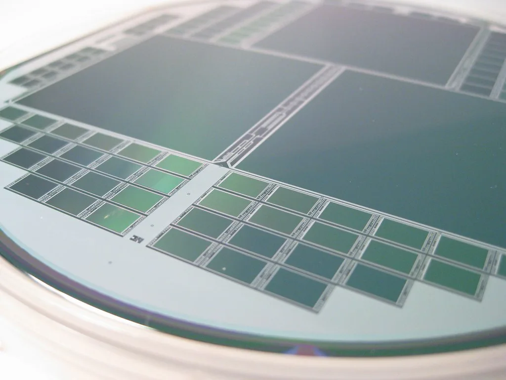

코스피가 24일 개장과 동시에 급등하며 매수 사이드카가 발동됐다. 이날 지수는 전 거래일보다 3%대 오른 채 출발한 뒤 상승폭을 빠르게 키웠고, 오전 9시 30분 무렵에는 280포인트 넘게 오른 4,990선 후반까지 치솟아 5,000선 회복을 눈앞에 뒀다. 상승률로는 6%를 웃도는 수준이다. 엔비디아 창업자 젠슨 황의 CEO 복귀 소식에 미국 반도체주가 큰 폭으로 뛰자 국내 반도체 대형주로 매수세가 한꺼번에 몰린 결과다.
한국거래소는 오전 9시 6분께 코스피200 선물 가격 급등에 따라 매수 사이드카를 발동했다. 사이드카는 선물 가격이 일정 수준 이상 급변할 때 프로그램 매수 호가의 효력을 5분간 정지해 시장 과열을 식히는 장치다. 코스닥 지수도 5% 가까이 오르며 매수 사이드카가 함께 발동돼, 두 시장이 동시에 과열 진정 조치를 받는 이례적인 장면이 연출됐다.

상승을 이끈 것은 반도체 투톱이다. SK하이닉스는 전날 종가 108만5천원보다 크게 높은 118만원에 거래를 시작했고, 장중 한때 123만원대까지 올라 상승률이 13%를 넘기도 했다. 삼성전자도 6~8%대 강세를 보였다. AI 반도체 수요의 상징인 엔비디아 주가가 하루 새 30% 안팎 급등했다는 소식이 메모리 반도체 수요에 대한 기대를 다시 끌어올렸다는 분석이다.
수급 측면에서는 외국인의 귀환이 두드러졌다. 외국인은 장 초반 코스피 시장에서 3천억원대를 순매수하며 지수를 끌어올렸고, 개인과 기관은 차익 실현에 나서며 순매도 우위를 보였다. 외국인 매수가 반도체 대형주에 집중되면서 지수 상승 기여도 역시 두 종목에 크게 쏠렸다. 외국인은 전날까지 7거래일 연속 매도 우위를 이어오며 시장을 짓눌렀던 만큼, 매수 전환이 하루 반짝에 그칠지 추세로 이어질지가 관심사다.
이번 급등은 최근 이어진 급락장의 반작용이라는 성격도 짙다. 코스피는 지난 21일 AI 관련주 투매 여파로 5% 넘게 떨어지며 '검은 금요일'을 겪었고, 23일에도 장중 매도 사이드카가 발동된 끝에 4,708선에서 마감했다. 짧은 기간 매도 사이드카와 매수 사이드카가 번갈아 나올 만큼 변동성이 극도로 커진 상태로, 시장이 AI 산업 관련 뉴스 하나하나에 크게 흔들리고 있다는 뜻이기도 하다.

증권가에서는 반등 자체는 반기면서도 신중한 태도를 유지하고 있다. 엔비디아를 둘러싼 지배구조 논란과 미 의회 증언 등 불확실성이 남아 있고, 미국 기술주의 고평가 논란도 완전히 해소된 것은 아니기 때문이다. 원·달러 환율과 시장금리의 움직임도 변수로 꼽힌다. 급등 이후 차익 매물이 얼마나 나오느냐에 따라 장중 상승폭이 크게 달라질 수 있다는 관측이다. 일각에서는 단기간 낙폭이 컸던 만큼 기술적 반등의 성격이 강하다는 해석도 내놓고 있다.
이번 주에는 국내 통화정책 이벤트도 기다리고 있다. 한국은행은 26일 올해 마지막 금융통화위원회를 열고 기준금리를 결정하는데, 시장에서는 인상 가능성을 높게 보고 있다. 금리 결정과 함께 나올 경기·물가 전망이 외국인 수급과 증시 방향에 영향을 줄 것으로 보인다. 이날 최종 종가와 투자자별 매매 규모는 장 마감 후 확정되며, 투자자들은 하루 중 변동 폭이 큰 장세인 만큼 과도한 추격 매수에 유의할 필요가 있다.